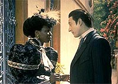

|
Viagens
no tempo e no espao, Parte II
Eis
que Enterprise estreou nos EUA, e fomos oficialmente
apresentados a mais nova maluquice do Brannon Braga: a
"guerra fria temporal". Ou seja, um dos pilares nos
quais a nova srie est sendo desenvolvida trata justamente de
intervenes na linha temporal. Teremos de esperar para ver se
essa no apenas uma estratgia de Berman e Braga para
reescreverem a histria de Jornada nas Estrelas e depois
apertar o reset button. De qualquer modo, Braga j desenvolvia
esse seu gosto por anomalias temporais na Nova Gerao, o
que nos trs de volta nossa coluna.
Ainda na quinta temporada, um interessante episdio foi
apresentado. Trata-se de "Cause and Effect", no
qual a Enterprise pega por uma anomalia que a aprisiona em um
loop temporal: uma seqncia de eventos repete-se, culminando
sempre na destruio da nave. interessante notar que tal
fenmeno restringe-se apenas quela regio do espao, pois ao
final do episdio descobre-se que, apesar de a tripulao ficar
presa em um loop de poucas horas, no restante da Federao o
tempo transcorreu normalmente, passando-se 17 dias.
O conceito da anomalia semelhante ao de "Yesterday's
Enterprise", com direito inclusive chegada de uma nave
do passado, no caso a Bozeman. Mas desta vez a chegada da nave
linha temporal da Nova Gerao no altera significativamente a
histria, mas crvel pensar que a coliso da Bozeman com a
Enterprise, e a subseqente exploso, o que causa o loop
temporal. O que significa que, a cada vez que a Enterprise volta
algumas horas no tempo, a Bozeman retrocede 90 anos (ou seja, de
volta sua linha temporal de origem).
Ao meu ver, o nico ponto falho no episdio a forma como eles
conseguem descobrir que algo est errado: os tripulantes comeam
a experimentar dj vu. Como apenas a pequena regio do espao
onde a Enterprise se encontra est sujeita ao loop, os sensores
da nave poderiam facilmente ter detectado inconsistncias com as
leituras de regies mais distantes, seja pela localizao de
estrelas e constelaes, seja por contato de algum tipo com a
Federao. Afinal, fora daquela regio o tempo continuava a
fluir normalmente...
 No
ultimo episdio da quinta temporada, somos apresentados a um
mistrio interessante: na Terra, encontrada em uma escavao
a cabea de Data, e alguns sinais de presena de aliengenas. A
Enterprise parte em investigao at o planeta Davidia II, onde
Data acaba, acidentalmente, enviado para So Francisco no sculo
19, onde encontra Guinan.
Enquanto isso, a tripulao tenta encontrar Data, descobrindo
que os responsveis pela incurso do andride so aliengenas
que se alimentam de energia mental humana. A tripulao acaba
tambm indo para o sculo 19. Acabam encontrando Data, e
eventualmente a caverna onde a cabea de Data foi encontrada.
Durante um conflito com os aliengenas, a cabea do andride
arrancada, e todos, exceo de Picard, voltam para o sculo
24, onde a cabea de Data (aquela encontrada na caverna),
recolocada no lugar. Eventualmente, eles conseguem trazer Picard
de volta e destroem os aliengenas.
|